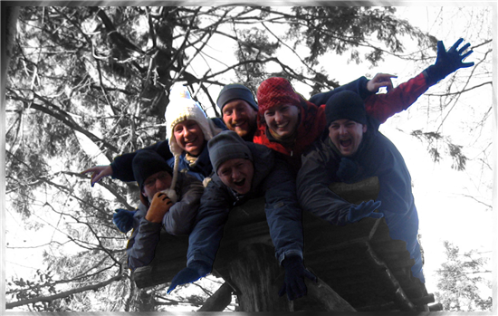

Expediční tým

Cítím respekt k lidem, kteří jsou natolik rozumní, že dokáží překonat svou ješitnost a mám respekt z věcí, které člověk může přežít jen tehdy, pokud maximálně dbá na svou bezbečnost. Největší výšku jsem si dovezla ze Skalnatých hor (Longs Peak - 4,346 m) a nejintenzivnější zážitky z Indie. Yetti samozřejmě existuje, jenomže je je bílý jako sníh a proto ho ještě nikdo nikdy neviděl. No a když je v zimě dost sněhu, tak sáňkuju, běhám a jezdím na sněžnicích a lyžích všech typů. A stavím Yettiláky!
Jsem tvor původem z hor, kam se často a rád vracím. Právě v údolích a na hřebenech intenzivně pociťuju respekt - k přírodě, k horám, k sobě samému. Před pár týdny jsem se pokusil vylézt na Mont Blanc. Hora byla silnější, pustila nás jen do výšky 4 500 metrů. Posunul jsem si osobní výškový rekord a pochopil, jak s člověkem zamává výšková nemoc.
Na zimě mám nejradši horký turecký čaj a roztopenou saunu. Jo a znám chlapa, co na vlastní oči viděl Yettiho mumifikovanou pracku.
Jsem trochu normální, trochu potrhlý, blázen a realista, co rád běhá po kopečkách s bandou dobrých kamarádů, rád se směje a občas si uletí (třeba do Kanady). Zimní radovánky mám rád snad všechny - od ledního hokeje přes běžky až po pravou, nefalšovanou koulovačku :-). Mám respekt z divoké vody, z vysokých lan a ze zkušeností. Nejvyšší místo, kam mě vlastní nohy vynesly je Mt. Ixtacuatl (5 200 m.n.m.) - a Yetti tam nebyl :-(. Jestli na něj věřím? To je přece jasný, ale věříte na toho Messnera?
Jemná milá klidná dívka, která má ráda teplo domova... Tak bych popsala sebe samotnou. Ostatní by asi řekli něco jiného, ale to je tím, že mě dostatečně neznají. Miluji pohyb, který je spíše horizontální než vertikální povahy - ze zimních aktivit proto mnohem víc hokej a válení sudů na mírném kopci než divoké sjezdování či zabodávání cepínů do ledopádu. Celkově mě ve výškách moc nespatříte - můj nejvyšší zdolaný vrchol má nadmořskou výšku 2865 m a jmenuje se Triglav. Yettiho jsem tam nespatřila, ale protože nemohu dokázat jeho neexistenci, věřím v něho.
Ač se to někomu nemusí líbit, jsem čistokrevný pražák. Mám rád Instruktory Brno a už skoro deset let za nimi jezdím na báječné akce na krásnou Moravu. Moje srdce přesto zůstává v Praze a zima je podle mého nejkrásnější 24. prosince dopoledne, kdy dav amatérů zpívá u Karlova mostu Rybovu mši vánoční.
I přesto, že se postupně měním z Homo Outdoorus na Homo Indoorus hory mám pořád v oblibě v jejich letní i zimní variantě. Sním o tom, že se jednoho dne vrátím na Elbrus, kde jsem při svém nejodvážnějším pokusu o výstup do hor, skončil 1000 metrů pod vrcholem (ve výšce 4 500 ). Zasním-li ještě o něco více, tak jsem zpět na milovaném Novém Zélandu. Když jsem poprvé objevil krásu této země, nechal jsem mezi delfíny část své duše a jednoho dne se prostě musím vypravit zpět, abych ji opět našel. Yetti samozřejmě existuje. Pokud mám nejčerstvější informace sedává pravidelně každou sobotu v restauraci Pod lavinou nedaleko Ještědu.
Vylézt na hory a dívat se do dáli, nechat myšlenky volně plynout, nebo je hodit ze stráně. Nebo vylézt na hory a klepat se zimou s partou přátel, podělit se o půllitr čaje z termosky a o kus špeku s česnekem. Zima za nehtama, mokrý boty, teplo u srdce. Hřejivá slova. Hlavně nechat blbce dole v údolí, ve městech, v autech, v kancelářích… Večer oheň, usušit vlhký spacáky, a jít se zahrabat.
Hory se nezdolávají, nekoří, hory se hrdě žádá o výstup, hora hrdě povolí nebo hrdě řekne ne. Respekt k nejslabšímu, respekt k neznámému, respekt k přírodě, respekt na všechny strany. Proč se na horách lidé tolik nehádají? Proč se zdraví i neznámí?
Holka, která miluje pohyb a nevydrží sedět doma. Pouze v případě tepla domácího krbu a sklenky krásného vína udělám vyjímku. Nejmilejšími zimními aktivitami je cokoli prováděno venku - hlavně, když je u toho zima, až praští. Provozuji běžné aktivity od odklízení sněhu a adrenalinové zimní jízdy na city biku do školy po běžkařské závody a skialpy.
Nedávno jsem se vrátila z průzkumné nepálské expedice. Abych vám mohla s klidným svědomím potvrdit, že Yetti opravdu existuje. Po horách běhá neuvěřitelně rychle a je to bytost plachá a vylézt jsem za ním musela do 6012mnm na himalájský Thapa Peak. Bohužel, na focení byly špatné povětrnostní podmínky. Tam, v těch nejvyšších horách světa jsem pocítila respekt k životu, k oddanému přátelství, k větru a mrazu, k mocné přírodě, ke svým silám a vnitřním hranicím každého z nás. Logicky asi vyplývá, že budu garant Nepálu :-)
Obvykle se vyskytuje ve výškách nad 5 000 metrů nad mořem, ale údajně byl spatřen i pod hranicí věčného sněhu. Podle šeptandy mezi domorodými šerpy má nejraději expedice jižních národů, které mu obvykle nahoru vynesou žrádlo a zmrznou. Předpokládá se, že Yetti věří ve svou vlastní existenci, nicméně prý respektuje i tvory s opačným názorem. Několik očitých svědectví potvrdilo, že nejoblíbenější kratochvílí Yettiho mláďat je strhávání lavin na horolezecké výpravy.